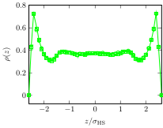

Effet d'un champ électrique sur la structure et la dynamique de suspensions colloïdales confinées : étude numérique par simulation
Salomon Chung, PLMC (UPEC)
Plan
[à compléter]
- Introduction : définition, motivation et modèle
- Propriétés d'équilibre en faible confinement
- Aspects dynamiques de l'inversion de population sous champ
- Conclusion et perspectives
Introduction
Suspensions colloïdales
Dispersion de macro particules dans un milieu porteur. Taille : du nanomètre au micromètre. Large gamme d'échelle de longueur et de temps
- Objets supramoléculaires → flexibilité : modulation des interactions entre les particules en jouant sur leur structure, physico-chimie, le milieu porteur, la géométrie et les champs extérieurs
- Applications très diverses : alimentaire, cosmétique, nanotechnologie, etc
- Etudes théoriques et expérimentales innombrables
Cadre
Situation physique
Manipulation par un champ extérieur de la composition d'un mélange binaire confiné.
|
Modèle physique
- Mélange binaire à diamètres non-additifs : sphères dipolaires (SD) et apolaires (SA), dont les interactions à courte portée sont purement répulsives (simplification). Correspond aux colloïdes stabilisés stériquement ou avec une très courte longueur d'écrantage.
- Géométrie de confinement : pore fente (deux murs parallèles sans structure) ou pore de taille finie avec interface explicite avec la phase volumique (dynamique).
- Champ extérieur : soit un champ uniforme normal ou parallèle aux parois (pore-fente), soit un champ normal localisé (DM pore interface explicite).


La non-additivité favorise la démixtion. Pour la DM : assouplissement de l'interaction dure → potentiel WCA.
But
Approfondir l'étude des propriétés d'équilibre du fluide confiné dans un pore-fente. Généralisation, éclairage supplémentaire
Nouveauté : étude de la dynamique pour des applications avec une géométrie plus réaliste (interface slab/bulk). Transition entre 2 états d'équilibre, temps caractéristique, etc.
Ce modèle pourrait sembler particulier :
- à l'échelle moléculaire : probablement
- à l'échelle supramoléculaire : moins évident
Champ et dipôles électriques
- contraste $\dip$ : particules polarisables et l'autre moins (contraste diélectrique, index match particule - solvant)
- stabilisation stérique : non-additivité probablement faisable : interpénétration des polymères

Champ et dipôles magnétiques


Pour les systèmes magnétiques (plus fréquemment étudiés dans la littérature) : Facilement réalisables pour les colloïdes. e.g. ferrocolloïdes : fig. 9 séparation de phase induite par champ principe des filtres optiques
Elaboration d'un pore
(insérer : image)
Méthodes de simulation
- Complexité du modèle : pas de méthodes analytiques
- Système à l'équilibre : Monte-Carlo
- Système hors équilibre : dynamique moléculaire + Langevin
- Interactions dipolaires : sommes d'Ewald + correction pour un pore
Effet d'un champ sur un mélange confiné de sphères dipolaires et apolaires : propriétés à l'équilibre
Modèle
Géométrie, composition et interaction à courte portée
Fluide dans un pore fente infini (CLP)

|
|
Première étape : MolPhys
Modèle Formule Méthodes : MC (code homemade), TVN, pore infini Variables de contrôles Sélection des principaux résultatsModèle
Interactions dipolaires et champ extérieur
- $u(\vec{r}_\ct{ij}, \vec{\dip}_\ct{i}, \vec{\dip}_\ct{j}) = \frac{1}{4 \pi \permittivity} \left[ \frac{\vec{\dip}_\ct{i} \cdot \vec{\dip}_\ct{j}}{r_\ct{ij}^3} - 3 \frac{(\vec{\dip}_\ct{i} \cdot \vec{r}_\ct{ij}) (\vec{r}_\ct{ij} \cdot \vec{\dip}_\ct{j})}{r_\ct{ij}^5} \right]$
- Champ : nul, perpendiculaire ou parallèle
Equilibres de phases
Courbes de coexistence obtenues par GEMC

bulk : pour différents $\nonAdditivity$ |
slab |
- La non-additivité favorise la démixtion.
- Les murs stabilisent le mélange.
Champ nul
Champ perpendiculaire
Champ parallèle
Synthèse
Effet d'un champ sur un mélange confiné de sphères dipolaires et apolaires : aspects dynamiques
Modèle : Géométrie de confinement
Interfaces entre le réservoir de particules et le milieu confiné.
Modèle : Potentiel d'interaction à courte portée
|
|
|
Modèle : champ extérieur

|
|
Méthodes de simulation
- MC : homemade
- DM : Espresso
Comparaison Monte-Carlo - dynamique moléculaire
 champ nul, SD
champ nul, SD
|
 champ nul, SA |
 champ allumé, SD+SA
champ allumé, SD+SA
|
- Accord MC / MD, réversibilité du système
- Champ appliqué : structuration des dipôles
Système réversible
Système réversible

Système réversible

Dynamique de l'inversion de population sous champ
|
Animation du remplissage et du vidage
Loi d'échelle en fonction de $\frictionCoefficient$

|
- Linéarité : $t_\uparrow + t_\downarrow \propto \frictionCoefficient^\ast$
- Extrapolation : pour $\frictionCoefficient^\ast = 460$, $t_\uparrow + t_\downarrow = 1500 \mathrm{s}$
- Champs croissants : saturation prématurée
Cycles irréversibles
Rôle de la taille des particules et loi d'échelle
Introduction
- Objectif : étude d'un système comportant un grand nombre de particules en interactions
- Fondement théorique : mécanique statistique
- Mise en œuvre : simulations numériques
Méthodes de simulation
- Modélisation et calcul des interactions
- Evolution à partir d'un état initial
- Reproductibilité des résultats
Monte-Carlo Metropolis
Echantillionnage préférentiel
- $p(x)$ densité de probabilité de la configuration $x$ : $$\langle a \rangle_p = \int \dif{x}\ p(x) a(x)$$
- $x_1, ..., x_\ct{M}$ configurations pondérés et $\ct{M} \to \infty$ : $$\frac{1}{\ct{M}} \sum_{\ct{i}=1}^\ct{M} a(x_\ct{i}) \longrightarrow \langle a \rangle_p$$
Monte-Carlo Metropolis
Algorithm de Metropolis
$A[x \to y]$ probabilité d'acceptation :
if (acceptation_probability < 1.) then
call random_number(rand)
if (rand < acceptation_probability) then
success = .true.
else
success = .false.
end if
else
success = .true.
end if
Dynamique moléculaire
Verlet vitesse :

|
|
Dynamique de Langevin
\[ m \ddrt{\vec{v}(t)}{t} = -\frictionCoefficient \vec{v}(t) + \vec{\randomForce}(t) + \vec{F}_\text{ext} \]-
Un théorème de fluctuation-dissipation relie :
- $\frictionCoefficient$ : le coefficient de frottement (macroscopique)
- $\vec{\randomForce}$ : la force aléatoire (microscopique)
Loi de Stokes pour une sphère de diamètre $\diameter$ : $\frictionCoefficient = 3\pi \dynamicViscosity \diameter$.